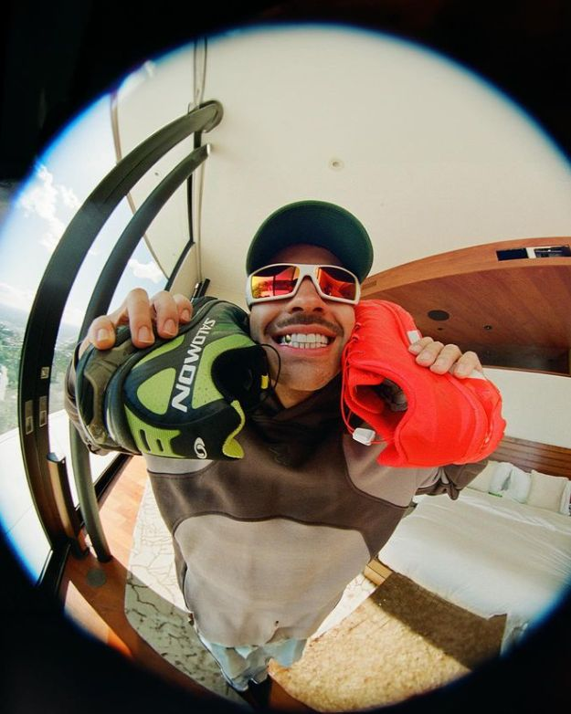

Explora fotos, historia y momentos del Ferxxo.
Disfruta este video
Feid, cuyo nombre real es Salomón Villada Hoyos, nació el 19 de agosto de 1992 en Medellín, Colombia. Desde niño fue alegre, creativo y soñador. Su conexión con la música empezó muy joven, pero su camino artístico tomó forma con el tiempo.
Antes de convertirse en el Ferxxo que todos conocen, Feid estudió Comunicación Gráfica y Publicitaria. Siempre le gustó el arte, el diseño y las ideas creativas, y aunque su vida tomó otro rumbo, esa carrera le ayudó a construir su identidad visual: moderna, diferente y llena de estilo.
A diferencia de muchos artistas, sus papás siempre lo apoyaron. Creyeron en su talento, lo animaron a estudiar lo que amaba y lo acompañaron en cada paso. Con ese respaldo familiar, Feid comenzó a escribir canciones para otros artistas como J Balvin y Nicky Jam, hasta que descubrió que él también tenía mucho por contar.
El nombre “Feid” surgió como un seudónimo artístico corto y fácil de recordar, mientras que “Fer” es el apodo con el que su familia y amigos lo conocen, mostrando su lado más humano y cercano.
Hoy, Feid representa autenticidad, energía y creatividad. Su música vibra con la misma pasión con la que empezó a soñar en Medellín, demostrando que creer en ti mismo y en tu esencia puede cambiarlo todo.
💚 Porque Feid no solo canta, él transmite buena vibra y demuestra que cuando haces lo que amas, todo brilla. 💚
¿Eres fan del Ferxxo? Déjanos tu mensaje o sugerencia.